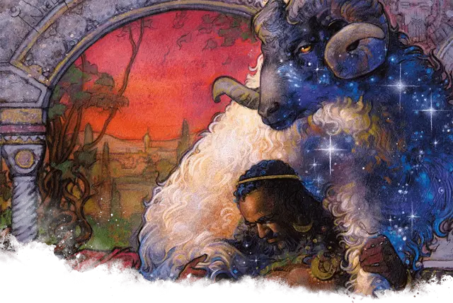

Звезднорунный овен
Nyx-Fleece Ram
Средний Монстр, без мировоззрения

Класс Доспеха 14 (природный доспех)
Хиты 27 (5к8 + 5)
Скорость 40 футов
| мод | спас | ||
|---|---|---|---|
| СИЛ | 16 | +3 | +3 |
| ЛОВ | 14 | +2 | +2 |
| ТЕЛ | 12 | +1 | +1 |
| мод | спас | ||
|---|---|---|---|
| ИНТ | 3 | −4 | −4 |
| МДР | 13 | +1 | +1 |
| ХАР | 10 | +0 | +0 |
Чувства пассивное Восприятие 11
Опасность 1 (200 опыта)
Бонус мастерства +2
Особенности
Атака в броске. Если овен переместится как минимум на 20 футов по прямой к цели, а затем в том же ходу попадет по ней атакой тараном, цель дополнительно получает от атаки 5 (2к4) дробящего урона. Если цель — существо, она должна преуспеть в спасброске Силы Сл 13, иначе будет сбита с ног.
Сопротивление магии. Овен совершает с преимуществом спасброски от заклинаний и прочих магических эффектов.
Устойчивый. Овен совершает с преимуществом спасброски Силы и Ловкости против эффектов, сбивающих его с ног.
Действия
Таран. . Рукопашная атака оружием: +5 к попаданию, досягаемость 5 футов, одна цель. Попадание: 8 (2к4 + 3) дробящего урона плюс 3 (1к6) урона силовым полем.
Описание
Тронутые богами, звезднорунные овны выращивают удивительную магическую шерсть. Это делает зверей ценными как для героев, так и для злодеев, которые будут использовать их шерсть либо для защиты, либо для получения прибыли. Божественные слуги охраняют немногочисленные стада звезднорунных овнов, обитающих среди самых высоких вершин Тероса, следя за тем, чтобы они не попали в ненадежные руки.
Волшебное руно. Если кто-то подстрижет звезднорунного овна, не повредив его, из руна можно сделать магическую одежду. Владелец, настроенный на одежду, как на магический предмет, получает благосклонность богов в виде магического дара. Используйте результаты из таблицы «Силы руна», чтобы определить свойство созданного предмета одежды.
Силы руна
| к6 | Свойство |
| 1 | Защита. Владелец получает бонус +1 к КД и спасброскам. |
| 2 | Сила Нюкты. Владелец получает преимущество на все проверки Харизмы (Убеждение). |
| 3 | Умиротворяющее присутствие. Владелец может один раз в день накладывать заклинание умиротворение [calm emotions] (Сл спасброска 13). |
| 4 | Цветочная тропа. Куда бы ни шёл владелец руна, за ним волшебным образом вырастают цветы. Цветы увядают через 1 час. |
| 5 | Близость к животным. Любой незлой владелец руна может один раз в день накладывать заклинание дружба с животными [animal friendship] (Сл спасброска 13). |
| 6 | Изобилие пищи. Владелец может один раз в день накладывать заклинание сотворение пищи и воды [create food and water]. |